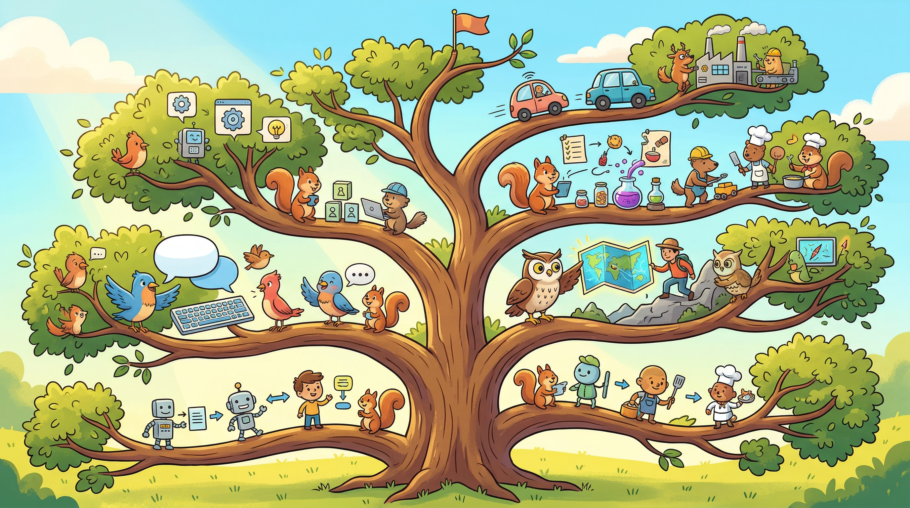

The best AI products are not built by finding problems and applying AI. They are built by discovering where AI-native capabilities create possibilities that did not exist before.
A Discriminating Language Model, Moments Before Its First Hallucination
While this chapter covers formal AI-assisted research methods, vibe coding extends these techniques with rapid experimentation. Use vibe coding to quickly test discovery hypotheses: generate product concepts and immediately prototype them to see if they resonate. Vibe coding lets you move from insight to tangible prototype faster, closing the loop between AI-assisted research and real validation before committing to full development.
Learning Objectives
- Apply AI-assisted market research methods to synthesize insights at scale
- Use LLMs to analyze customer interviews and extract actionable themes
- Apply Jobs-to-be-Done analysis with AI-powered workflow mining
- Generate and filter product concepts using AI ideation systems
- Recognize and mitigate validity traps in AI-assisted research
Chapter Overview
AI-native product discovery transforms every phase of the discovery process. LLMs can synthesize market reports, analyze customer interviews at scale, extract patterns from user behavior data, and generate product concepts faster than any human team. But these capabilities come with traps that can lead you astray if you do not understand them. This chapter covers five interconnected discovery domains: AI-assisted market research, voice of customer synthesis, Jobs-to-be-Done and workflow mining, rapid concept generation, and research validity traps.
We follow three running examples throughout this chapter. EduGen is an EdTech startup building AI-powered vocational training. QuickShip is a logistics startup optimizing last-mile delivery. RetailMind is a retail AI company personalizing in-store experiences. Each example demonstrates discovery techniques in context, showing what works, what fails, and how to tell the difference.
Four Questions This Chapter Answers
- What are we trying to learn? How to run AI-assisted discovery that produces genuine insight rather than AI-generated noise that confirms pre-existing biases.
- What is the fastest prototype that could teach it? Using an LLM to synthesize a small set of customer interviews and comparing results against human analysis of the same interviews.
- What would count as success or failure? Discovery outputs that can be validated through subsequent user research rather than just feeling conclusive because they are detailed.
- What engineering consequence follows from the result? AI-assisted research requires human oversight and validation workflows to avoid building products on flawed discovery foundations.
Prerequisites
This chapter builds on foundational concepts from earlier chapters. You should be familiar with:
- Chapter 5: Finding Problems Worth Solving with AI for problem-first thinking and decomposition methods
- Chapter 8: Designing AI User Experiences for understanding AI interaction patterns
- Chapter 1: AI Capabilities and Limitations for understanding what AI can and cannot do reliably
Role-Specific Lenses
Product managers who master AI-native discovery can run discovery cycles that would take traditional teams months in a matter of days. But the speed advantage only matters if you avoid the validity traps that can make AI-assisted research feel conclusive while being dangerously wrong. PMs need both the techniques and the critical judgment to use them well.
Designers bring crucial perspective to discovery by advocating for user needs against technology-driven excitement. Understanding AI-assisted research helps designers contribute to discovery without being overawed by AI-generated insights, and helps them identify where user research still matters more than synthesis.
Engineers often spot AI opportunities first because they understand technical feasibility. AI-assisted discovery amplifies this ability, allowing engineers to quickly validate whether user problems have AI-solvable components. But engineers must also recognize the validity traps, because building products based on flawed discovery is far worse than building nothing.
Strategic investment in AI requires disciplined discovery that produces genuine insight, not just volume. Leaders who understand AI-assisted discovery methods can guide their teams toward rigorous approaches and avoid the expensive mistakes that come from acting on AI-generated findings that have not been properly validated.
Sections in This Chapter
- 7.1 AI-Assisted Market Research Using LLMs to synthesize market reports, competitive analysis, trend identification, and validation needs
- 7.2 Voice of Customer Synthesis Analyzing customer interviews at scale, sentiment analysis, theme extraction, connecting to product opportunities
- 7.3 Jobs-to-Be-Done and Workflow Mining AI analysis of user behavior, identifying unmet needs, opportunity sizing, prioritization frameworks
- 7.4 Rapid Concept Generation Using AI for ideation, expanding solution spaces, combinatorial innovation, filtering and prioritizing ideas
- 7.5 Research Validity Traps When LLMs hallucinate market data, confirmation bias in AI-assisted research, validation requirements, human oversight in discovery